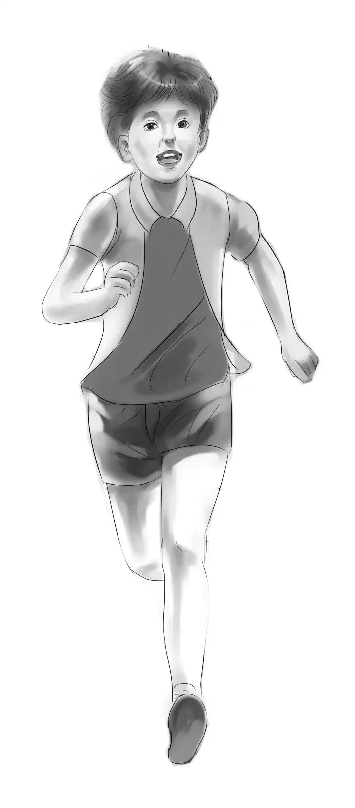
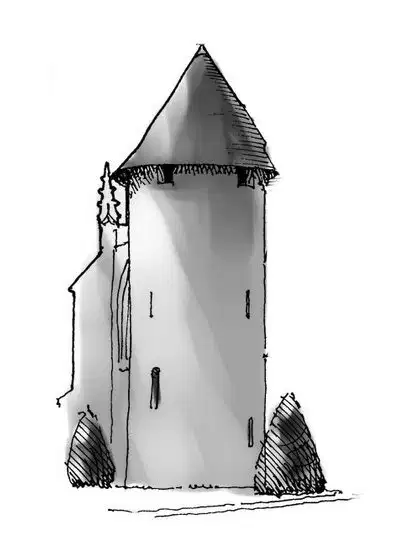
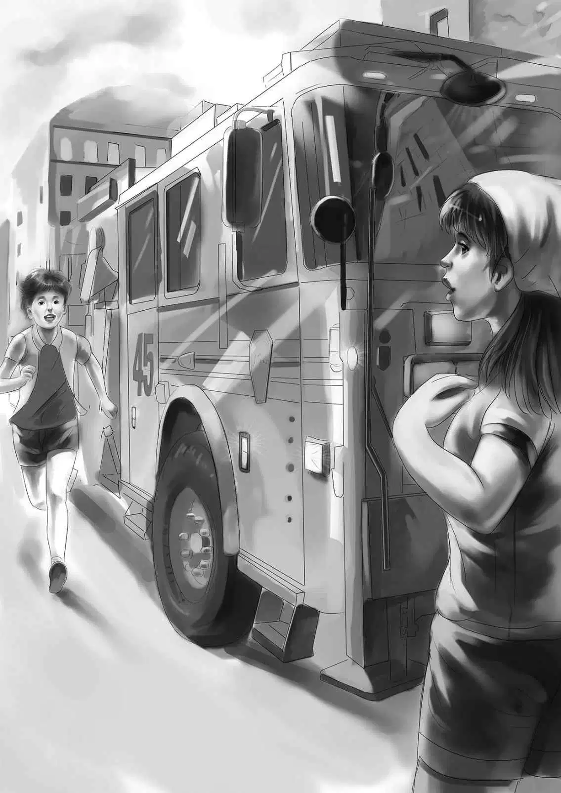
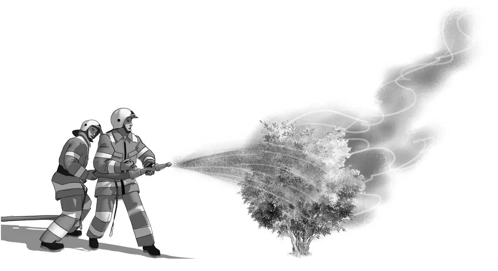

After Mr. Lee had gone, Benny said, “I’ll tell you what let’s do. Let’s drive around behind the Tower House. If we go very slowly maybe we can see a back window.We wouldn’t seem to be looking.”
“Fine,” said Henry. “I can’t believe those stories about a hundred cats are true.”
“Maybe they are, Henry,” said Jessie. “Remember that strong smell.”
“Let’s go,” said Benny. He took his tray into the kitchen, and the others followed.
Soon the Aldens were driving up a beach road they had not taken before. It suddenly turned to the right.
“I guess nobody uses this road,” said Henry. “We’ve met no cars or people.”
“Slower!” said Benny. “Just crawl along, and then we can see.”
But there was not much to see, even though Henry drove as slowly as he could.Large trees stood at the back and sides of the Tower House. Everything looked wild and as if no one cared.
All at once the Aldens saw two small boys. They had towels around their shoulders. They were going to the beach.The boys noticed the Aldens looking toward the Tower House.

“Hey!” called one of the boys. “Going to see the old witch?”
Henry stopped the car. “Old witch?” he asked.
Yeah,” replied the boy, pointing to the Tower House.The upper floors of all the towers were boarded up. “Don’t you know an old witch lives there with one hundred cats?”
Violet said in a quiet voice,“How do you know?”
“Everybody knows. Ask anybody.”
The other boy said, “I know I’d never go there. Not on a bet.”
Jessie said,“We saw the woman who lives there.Her name is Miss Mary Smith.”
“Aw, you saw her by daylight, going grocery shopping. You never saw her running on the beach at night, I bet. She goes to howl at the moon.”
“Nonsense!” said Jessie. “Nobody howls at the moon, except maybe dogs.”
“You’re sure of yourself, aren’t you? Well, we’re warning you. Don’t hang around this house. She can put a hex on you as easy as looking at you. And she’s got those hundred cats. Cats can be crazy, too. She feeds them raw meat.”
“Doesn’t she buy cat food?” asked Violet.
“Naw, never. She buys raw meat, pounds of it, and that makes them wild. Didn’t you ever hear of an old witch and her cats?”
“Yes, on Halloween,” answered Henry. “But Miss Smith is a real person, not a witch.”
“Have it your way,” said the other boy. “You’ll get out of here if you know what’s good for you. Just don’t have anything to do with the Tower House. It’s haunted.”
“We don’t believe in haunted houses,” said Benny. “There is always some reason if you can just find it.”
“That’s what you think. For one thing, her name can’t be Mary Smith. That’s just a made-up name. And why does she shut herself up and never speak to anybody?”
The first boy said, “One day I threw a stone at that window, the big one. And you know what? Mary Smith got a big piece of glass and lugged it home and put it in herself. Never said a word about it to anybody.”
You think that was crazy?” asked Benny.
Yes, I do. Anybody else would have told the police. But she didn’t. You know why? She doesn’t want the police to know too much about her. She’d rather pay for that big window pane and fix it herself.”
Henry asked,“Why did you break her window, anyway?”
Well, I just felt like throwing a stone, and the kid with me said to go ahead. He’d like to see what she would do about it.”
“And you found out,” Benny nodded. “I’m sorry for Miss Smith or whoever she is. That glass must have cost plenty. It must have been heavy, too.”
“The old witch has money, that’s for sure,” said the boy. “She buys lots of food for herself. I’m not sorry for her. You can be sorry if you like, not me.”
And the two boys went off, swinging their towels.
The Aldens sat perfectly still in the car. At last Jessie spoke slowly. “Of course Miss Smith isn’t a witch. But there is something very wrong about her. I wish I knew what it was.”
Yes,” agreed Benny. “I don’t know why she didn’t take the locket. She could have looked at it anyway. But she just shut her door.”
The Aldens looked toward the big window behind the bushes. There was no curtain. Nothing moved inside. There was no sound.
“Everything looks so hot and dry,” Jessie said. “Even the weeds look brown.”
“I suppose we’re just wasting our time,” Violet said at last. “Let’s go and do our grocery shopping, Henry.”
Henry began to back the car to turn it around on the narrow back road. Suddenly Benny heard something.
“Hey, Henry, did you hear that? Me-ow! That was a cat. Stop again.”
“I didn’t hear anything,” replied Henry. “The car makes such a racket backing on these stones.”
“Well, I did,” said Benny. “I heard meow just as plain as anything.”
The family waited. Nobody else heard anything.And even Benny heard nothing more. They turned around and watched the window again.
“Was that a shadow?” whispered Jessie.
“It looked like a shadow,” whispered Benny.
Then a pure white cat jumped up on the windowsill behind the glass. “Mee-ow,” it cried.
“There!” exclaimed Benny. “There is one of the hundred cats for you!”
“What a beauty,”whispered Violet.“Pure white.I wish I could see his eyes. He looks so soft and furry. And look at his big tail.”
The cat sat down on the windowsill and began to wash its paws.The Aldens could see him plainly.
Violet said, “I think that is a Persian cat.”
Benny said, “Now we know there is at least one cat in the Tower House. Maybe there are ninety-nine more hidden away.”
Henry said, “We’ve been here quite a long time. If anyone besides the cat in the Tower House has seen us, it might not be good. After all, we don’t want Miss Smith to think we are spying on her.”
“I didn’t think of that,” said Jessie. “Yes, let’s go.”
Jessie and Violet did the shopping. The boys walked along Main Street, looking in the windows. There were all sorts of things for the summer people to buy. An art store had oil paintings of the ocean. Then the boys crossed the street.
Most of the buildings on that side were made of wood, and some were quite close together.
Henry and Benny came to the fire station. Benny waved at one of the firemen. “Hot, isn’t it?” he called.
The fireman nodded. “Bad weather for firemen,”he said. “Everything is so dry. This is when a fire can spread fast.”
“Come on, Benny,” Henry said. “Let’s go back to the car. The girls should have their shopping done now.”

Jessie and Violet were waiting. “I’m going for a swim as soon as we get back,” Violet said, getting into the car.
“Let’s just take one more look at the Tower House on our way back,” Benny said.
As the car came near the old house, Henry slowed down. All at once Benny exclaimed, “Stop, Henry! Stop right here.”
Before anyone could say a word Benny had the car door open and had jumped out. He was running back along Main Street as fast as he could.
“What—” Henry started to say. Then he stopped. At that moment Violet said, “Henry, I smell something burning!”
“Me, too,” Jessie said.
Henry and the girls jumped out of the car and looked around. The car was safe. But why had Benny run off ? Now he had disappeared.
Suddenly Violet said, “Look, Henry! The grass in the yard is on fire!”
As she spoke, a flame reached the bushes. The dry leaves blazed up high.
“Get back!” Henry said. “I’ll go for help.”
But help was already there. The fire engine pulled in just as Henry started. Benny came racing after it.
Jessie exclaimed, “Oh, that’s where Benny was.He smelled smoke and ran back for the firemen.”
Even before Benny reached the girls, a fireman was turning a chemical fire extinguisher on the bushes. Another fireman was beating out the grass fire.
Everyone was so busy that they did not see the side door of the Tower House open just a crack. No one saw that there were now three cats on the windowsill of the big back window.
Nobody thought that Miss Smith, inside the house, could hear every word.

The fire blazed high for a moment, and then it began to die down. Before anyone walking past could call, “Fire! Fire!” the danger was over.
The fire chief came over to the Aldens. He said, “This was only a small brush fire. Only the bushes and the grass burned. But in fifteen minutes it would have been a big house fire. This house could have burned to the ground. Then the fire could have spread to the next row of houses on the hill. The wind is blowing the right way for that. You saved Miss Smith’s house, and maybe her life, young man.” He looked at Benny.
Benny said slowly, “People don’t seem to like Miss Smith. Do you think somebody started the fire?”
“No, I don’t think so,” the fireman answered. “Maybe someone threw a cigaret in the bushes.”
“Here you are,” said another fireman. “Here’s the end of a cigaret right at the edge of the grass.”
“People are so careless,” the first fireman said. “If this had happened at night, the whole town of Beachwood could have burned.”
There was still a smoky smell in the air, but the fire was out. The firemen went back to their truck.
“Good work,”the fire chief said to Benny. “You ran for help. You didn’t waste any time trying to put the fire out by yourself.”
Violet looked toward the Tower House, then she said, “Quick, look over there!”
The door was open just wide enough so that Miss Smith could look out. When she saw Violet, she called, “Who saved our house?”
“That boy, Benny. My brother,” Violet said. “He ran to get the fire department to come.”
“Which boy is Benny?” asked Miss Smith.
“Right here. Me,” said Benny.
Miss Smith looked at him and said, “Good!” Then she went in and shut the door. The Aldens looked at each other.
Henry said, “Miss Smith isn’t very friendly.”
Jessie said, “I told you it would be slow. It will take more than a fire to make friends with Miss Smith. She has been shut up alone too long.”
“Well, Ben, you didn’t do it to be thanked,” Henry said.
“No,” answered Benny. He was very quiet. He was thinking.
As the Aldens drove back to the beach trailer, Jessie said, “I’m glad nobody set that fire. After that boy told us about breaking that window for nothing, I could believe almost anything.”
“Right,” agreed Henry. “I can’t blame Miss Smith for not being very friendly.”
Then Benny burst out, “You know what? I think there are two people living in Tower House! I don’t think Miss Smith lives there all by herself.”
“We know she has cats,” Jessie said slowly.
“I don’t mean the cats,” Benny said firmly. “I think another person lives there, too.”
“Everybody says she lives alone, Ben,” argued Henry.
Violet asked,“What makes you think that, Benny?”
Benny answered quickly,“Don’t you remember she said, ‘Who saved our house?’ Not my house. When she said that, she didn’t mean the cats. I’m sure of it.”
“Well, you may be right,” said Jessie.
“Maybe I am,” Benny agreed. “And maybe that locket belongs to this mysterious person, and that is why Miss Smith wouldn’t take it.”
“I begin to see!” Henry said, nodding. “If she took the locket, that would give her secret away!”